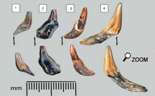
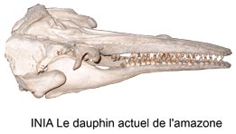
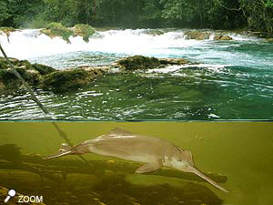
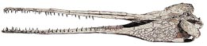

|
  |
||
 |
|
||
|
A la racine… 
Les dents 1 et 4 montrent une racine classique assez fine. La dent 2 présente un fourreau épais de cément sur la première racine rendue invisible. La dent 3 montre la racine fine insérée dans la gaine de cément en partie ajourée. Un peu d'ordre dans la famille
Ces dauphins vivent exclusivement dans des écosystèmes en eau douce. Ces 4 espèces vivent dans des rivières géographiquement distinctes. Pomatodelophis est une espèce rattachée aux Platanistidae. Ils sont relativement bien connus grâce aux restes fossiles.  Ce sont des espèces au long museau, retrouvées dans les dépôts marins des zones épicontinentales entre le miocène moyen et le miocène tardif.A l’heure actuelle, cette lignée Platanistidae n’est plus représentée que par Platanista le dauphin de rivière du Gange et de l’Indus. Platanista est un dauphin qui nage sur le côté, aveugle. Il est reconnu depuis longtemps comme le genre vivant le plus archaïque. Cette espèce est hautement menacée.
Survivance de ces dauphins antédiluviens Des surfaces importantes de basses terres continentales ont été inondées favorisant ainsi de nouveaux écosystèmes. La plaine de l’Indus et du Gange du sous-continent indien, le bassin amazonien et du Paranaï et le fleuve Yangtsé en chine forment de grandes zones de delta qui furent submergées par la mer. La mer des faluns en est un autre exemple. Dans ces régions, un écosystème particulier s’est développé à partir d’une aptitude à supporter à la fois l’eau douce et l’eau salée. Il est probable que les ancêtres des 4 espèces actuelles de dauphins de rivière vivaient dans ces aires de delta au miocène. Vers la fin du miocène, ces deltas ont été restitués aux fleuves par la baisse du niveau d’eau. Cette régression a continué pendant le pliocène.  Les dauphins de rivière ont échappé à l’extinction grâce à leurs adaptions aux conditions de vie en rivière. On peut imaginer que pour un prédateur en mer, l’un des critères sélectifs est la rapidité. Il est probable que la longueur du rostre des dauphins de rivière constituait un facteur défavorable par rapport aux dauphins évolués. En effet, le rostre long rencontre un problème de pénétration hydrodynamique. Mais surtout un handicap très lourd dans les changements de direction… Cette lenteur peut agir de 2 façons: Dans les eaux douces, le problème se pose différemment. Il ne sert à rien d’aller vite dans un milieu trouble et rempli d’obstacles naturels (racines, haut fonds…). C’est pourquoi ces espèces devinrent aveugles progressivement parce que la vue n’offrait aucun avantage. Par contre l’écholocation est un avantage qui a permis à ces dauphins de rester des espèces compétitives dans ces milieux.  Mais quel était l’intérêt d’un long rostre de ces dauphins? On notera qu’entre Pomatodelphis et les dauphins de rivière actuels, la longueur du rostre s’est quand même atténuée… |
|||